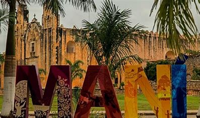
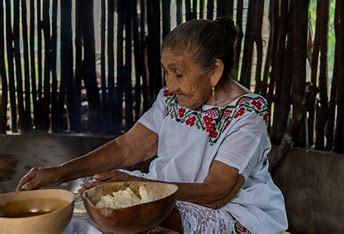
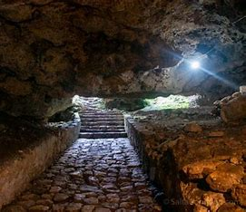
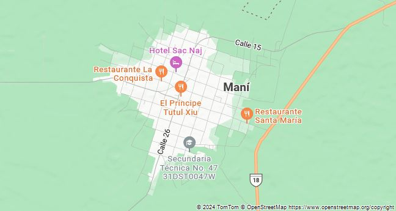
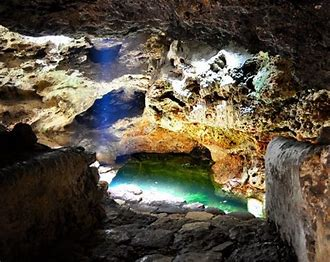

MANI
IR AL MENU

En el corazon del estado se encuentra Mani,uno de los pueblos mas
antiguos, su nombre en lengua maya significa "lugar donde todo paso"
andar por sus calles es encontrarse por una comunidad viva que
mormura en su lengua materna y portar orgulloso esos colores y diseños
quele da la identidad. Es ver a las mujeres bordar y cocinar, a los
niños andar en bicicleta, a los ancianos descansar bajo la sombra de
sendos de arboles, es el inicio con
el recuentro maya.
EL MOTIVO
:"SU HISTIRIA Y LA CULTURA MAYA VIVA"
- A la llegada de los españoles, Mani era una de las tres capitales prehispanicas mas importantes de la region.
- El convento de san miguel Arcangel con su capilla
abierta y una escuela de indios se volvio uno de los conjuntos
conventuales mas sobredsalientes de la peninsula de yucatan.
- Aqui se cocina el poc chuc considerando el mas delicioso de todo el estado.
- Las bordadoras artesanas aun conservan la tecnica
de x'manicte, una tecnica de bordado mas antigua de yucatan y en
peligro de extincion.
IMPRESCINDIBLES:
- Caminar por las calles de Mani y el convento de san miguel arcangel.
- conocer sus talleres artesanales.
- conocer sus cenotes xcabachen.
- cosechar miel en los meliponeros.

CENOTE EN MANI

La sombra de una
enorme ceiba cobija al cenote x'cabachen, ese sitio sagrado del que se
cuentan muchos historias, platica con los pequeños de ahi esperan
ansiosos contar la leyesdas que tanto asombro an causado hace cientos
de años.
Mani fue fundada en la
tercera comunidad indigena de yucatan, donde se establecieron los
franciscanos: es su fundacion se influyo el deseo que montejo tenia que
que fueran enva- gelizados los indios en su encomienda. Ofrecen
textiles bordardos a maquinas como huipiles, ropa de cama y manteleria.
mani se le conoce unos
de los ´pueblos mas hermosos que se resguardan grandes cuentos y
leyendas porn eso se le conoce como pueblo magico.
UBICACION

MANI: ARTESANIAS Y GASTRONOMIA
Otra de las razones por los que los turistas cada ves se
enamoran y hablan mas de mani, son sus bordados tradicionales el
trabajo puede hacerse a maquina o a mano, sin embargo, la labor es
ardua, los textiles abarcan huipiles.
Mani posee un cenote, lamentablemente, debido en los cambios en las
napas el agua se encuentra estanccada, sin embargo posee una
importancia religiosa para la poblacion local.

Esto es uno de los lugares arqueologicos muy bonitos de mani
cueva arqueologicas.